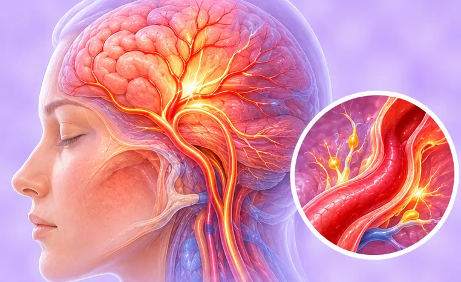
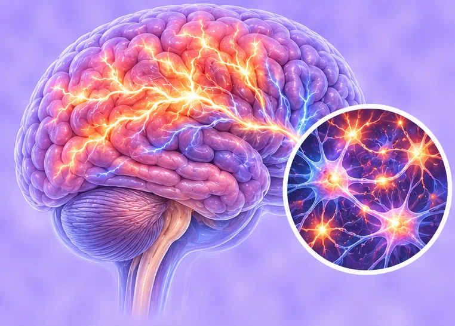

脑与神经
118 种疾病与症状
 3D眩晕症
3D眩晕症 三叉神经痛
三叉神经痛 不安腿综合征
不安腿综合征- 丛集性头痛
- 亨廷顿舞蹈病
- 低颅压综合征

偏头痛 偏瘫
偏瘫- 出血性脑梗死
- 前庭功能紊乱
- 前庭神经元炎
 化脓性脑膜炎
化脓性脑膜炎- 单纯疱疹病毒性脑炎
 周围性面瘫
周围性面瘫 周围神经病
周围神经病- 周期性瘫痪
- 基底动脉狭窄
 多发性末梢神经炎
多发性末梢神经炎- 多发性硬化症
 寰枕融合
寰枕融合- 寰枢椎不对称
- 寰枢椎不稳
- 小脑出血
- 小脑萎缩
 帕金森病
帕金森病- 平山病
- 心源性脑栓塞
- 急性缺血性脑卒中
- 急性脊髓炎
- 截瘫
- 新型隐球菌脑膜炎
- 无症状性脑梗死
- 枕骨大孔疝
- 格林-巴利综合征
- 椎-基底动脉供血不足
- 椎动脉狭窄
- 流行性乙型脑炎
- 海马硬化
- 烟雾病
- 特发性震颤
- 瑞氏综合征
- 病毒性脑炎
- 病毒性脑膜炎

症状性癫痫综合征- 痉挛性斜颈
- 癫痫
- 眩晕症
- 短暂性脑缺血发作
- 神经性头痛
- 神经病
- 紧张性头痛
- 细菌性脑膜炎
- 肋间神经炎
- 肋间神经痛
- 肌强直性营养不良
- 肌萎缩侧索硬化
- 股外侧皮神经炎
- 脊髓压迫症
- 脊髓拴系综合征
- 脊髓炎
- 脊髓空洞症
- 脊髓血管畸形
- 脑供血不足
- 脑出血
- 脑出血恢复期
- 脑动脉盗血综合征
- 脑动脉硬化症
- 脑动静脉畸形
- 脑卒中
- 脑囊肿
- 脑干梗塞
- 脑损伤
- 脑栓塞
- 脑梗死
- 脑水肿
- 脑炎
- 脑炎后遗症
- 脑白质病变
- 脑积水
- 脑缺血
- 脑脓肿
- 脑膜炎
- 脑膜炎球菌性脑膜炎
- 脑萎缩
- 脑血栓
- 脑血管狭窄
- 脑血管畸形
- 脑血管病
- 脑血管痉挛
- 脑血管瘤
- 脑血管硬化
- 脱髓鞘
- 脱髓鞘疾病
- 腔隙性脑梗死
- 自身免疫性脑炎
- 良性颅内压增高
- 蛛网膜下腔出血
- 蛛网膜囊肿
- 血管性头痛
- 血管性痴呆
- 视神经脊髓炎
- 言语障碍
- 路易体痴呆
- 运动神经元病
- 进行性肌营养不良
- 进行性脊肌萎缩症
- 酒精性脑病
- 重症肌无力
- 阿尔茨海默病
- 隐性脊柱裂
- 面瘫后遗症
- 面神经麻痹
- 面肌痉挛
- 韦尼克脑病
- 颅内动脉瘤
- 颅内感染
- 高位截瘫
- 高血压性脑出血